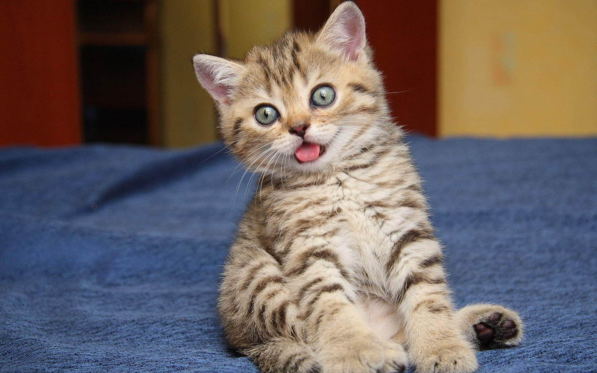

There are a few reasons why this ol' webpage was brought into existence.
The first and foremost reason is so that I don't flunk this project. The second
reason is to help you get to know me better. For starters, my name is Fatemah Ahmed.
I am in tenth grade, I'll be 16 in October, and am a Fall baby that likes spring better.
My nationality is Indian but I was born in Illinois. Fun fact, even though I'm Indian, my
tongue can't tolerate very spicy foods. :/ My favorite colors are grey (because cat hair
isn't really visible on it) and royal blue 'cuz why not. I prefer sunrises to sunsets and
savory foods to sweet foods. My family isn't too big or too small and consists of my mom,
dad, older brother, younger sister, younger brother, our cat, and me. A few hobbies of mine
are reading, painting, and cooking. Now that introductions are out of the way, check out
the rest of my super cool website. :)
